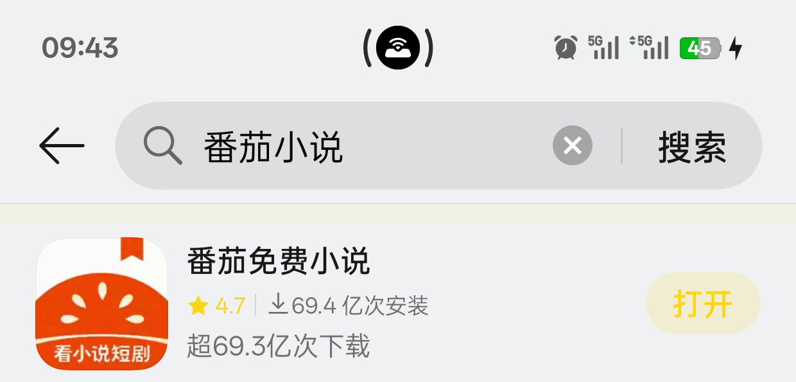
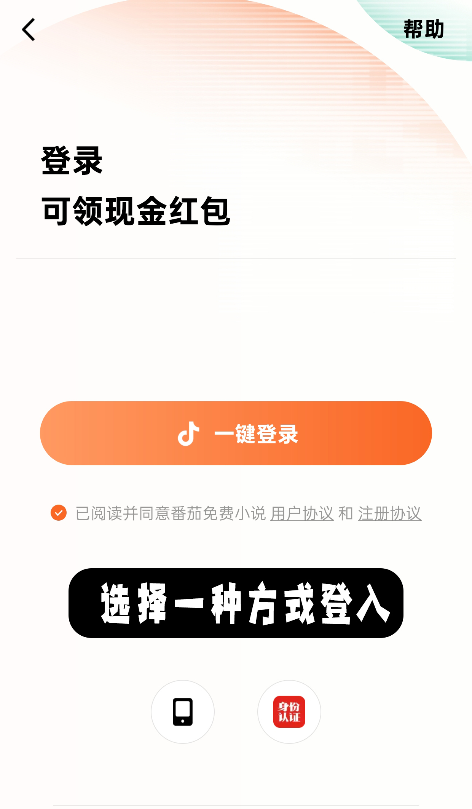
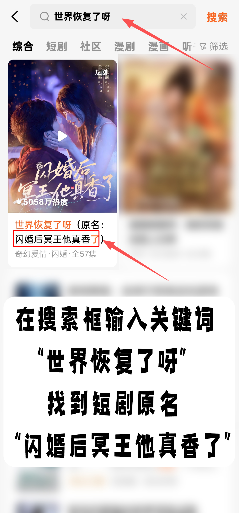

访问密码获取流程
按照以下步骤获取 AI 访问密码：
1
下载番茄小说 - 在手机应用商店搜索"番茄小说"并下载安装
2
登录账号 - 打开番茄小说，使用手机号或第三方账号登录
3
搜索关键词 - 在搜索框输入 "世界恢复了呀"
4
获取密码 - 找到 "闪婚后冥王他真香了" 第1集，1:55处的两个中文字幕就是密码
提示：密码是两个中文字，请仔细观看视频并准确记录。如果看不清楚，可以暂停或回放视频。
01
下载番茄小说
在手机应用商店搜索"番茄小说"并下载安装
1
打开手机应用商店（App Store 或 Google Play）
2
在搜索框输入 "番茄小说"
3
点击下载并安装应用

02
登录账号
打开番茄小说，使用手机号或第三方账号登录
1
打开已安装的番茄小说应用
2
点击右下角 [我的] 选项
3
选择登录方式（手机号/微信/QQ）
4
完成登录验证
必须登入账号才能确保获取访问密码

03
搜索关键词
在搜索框输入 "世界恢复了呀"
1
点击应用顶部的 [搜索] 图标
2
在搜索框输入 "世界恢复了呀"
3
点击搜索按钮或键盘回车
搜索关键词
世界恢复了呀
04
获取密码
观看第 1 集，在 1:55 处查看两个字的中文字幕，这就是访问密码
1
在搜索结果中找到 "闪婚后冥王他真香了"
2
选择 第 1 集 开始播放
3
将进度条拖到 1:55，仔细观看两个中文字
4
记录下这两个字，这就是访问密码